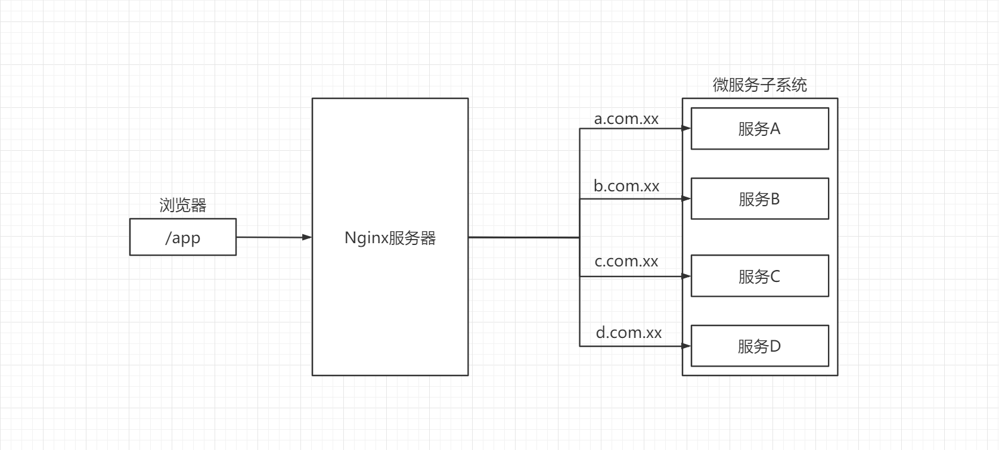
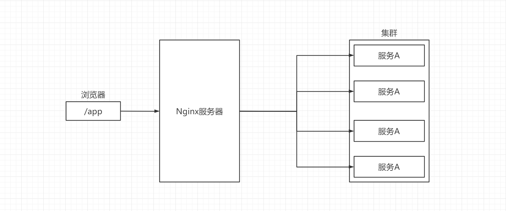
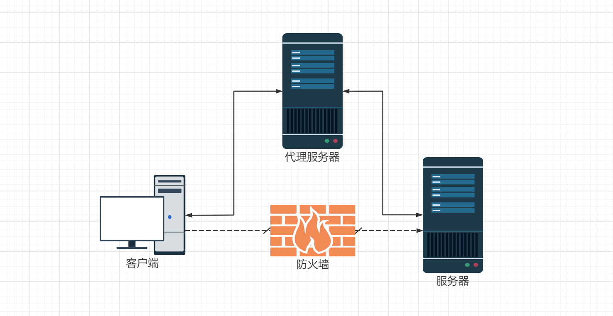
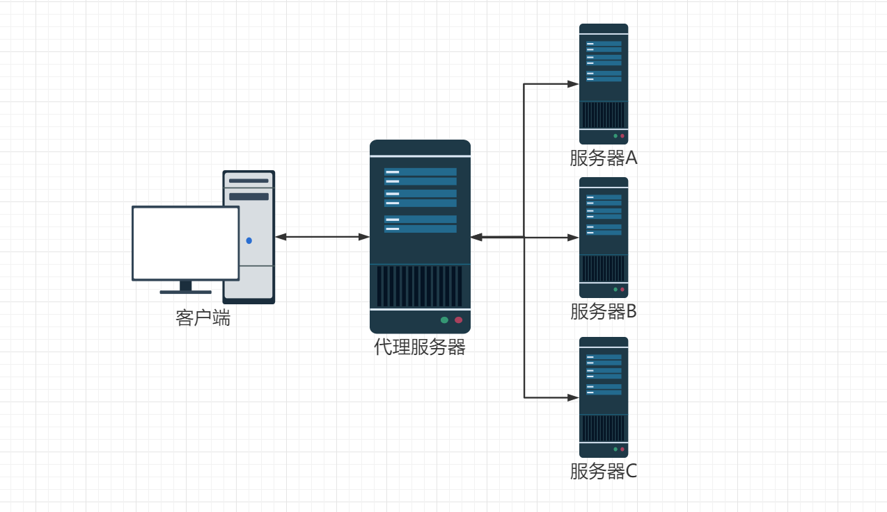
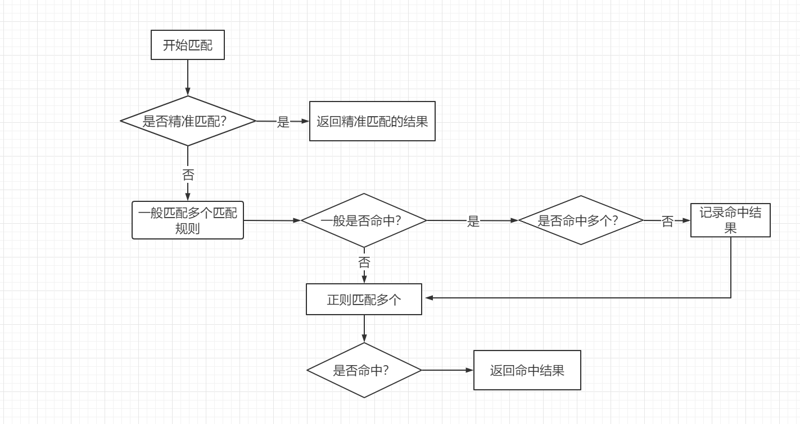

Nginx基础
明年此日青云去，笑看今朝举子忙
Nginx入门
1、Nginx简介
Nginx是一个高性能的HTTP和反向代理服务器，也是一个IMAP/POP3/SMTP服务器。
IMAP：Internet Message Access Protocol，名称为因特网信息访问协议，是一个应用层的协议，用来从本地邮件客户端访问远程服务器上的邮件；
POP3：Post Office Protocol 3，是一种接收电子邮件的标准协议，允许电子邮件客户端下载服务器上的邮件。
优点：用户检查邮件信箱后，信件会被下载储存于计算机上，占用计算机的硬盘空空间；而服务器上并不保留信件备份，以免信件一直累积，造成服务器上的信箱爆满
缺点：缺点是如从不同的计算机连到同一个电邮户口时，无法使各计算机所拥有的电子信箱均一致同步。
与IMAP的区别：IMAP是通过邮件客户端直接连接到服务器上，可以直接对邮件进行操作，并将邮件保留在服务器上。
IMAP可以从数个不同的地点联机，所读取的信件仍为同一份置于服务器上的信件，可令所有电子信箱均一致同步
SMTP：Simple Mail Transfer Protocol，简易邮件传输通讯协议，主要功能是用于传送电子邮件。(IMAP和POP3是收，SMTP是发)
常见的应用服务器有：Apache、Microsoft IIS、Tomcat、Lighttpd、Nginx。
Nginx的服务器功能
Nginx在Web应用中常用于做高并发项目中的横向扩展，集群的相关信息。
Nginx的横向扩展功能：

在一个微服务的应用，将一个完整的应用拆分成多个微服务。通过Nginx服务器对路由进行分发，来完成每一个服务的访问。
Nginx的集群功能：

在一个Web应用中，有时候一台服务并不能满足高并发的需求，需要通过Nginx服务器进行负载均衡。将高并发的请求分发到多个服务器上。
静态资源文件服务器
有些时候将静态资源用Nginx服务器作为单独的访问系统。
Nginx的代理功能
一般常说的代理都指的是正向代理，而代理分为两种，一种是正向代理；另一种是反向代理。
正向代理
一个位于客户端和原始服务器之间的服务器，为了从原始服务器取得内容，客户端向代理发送一个请求并指定目标（原始服务器），然后代理向原始服务器转交请求并将获得的内容返回给客户端。

上图中，客户端向服务器发送请求被防火墙阻拦，改为向代理服务器发送请求，由代理服务器将请求转发给服务器。（类似海外代购，大家无法购买到进口的奶粉，找海外代购帮忙购买）
反向代理
以代理服务器来接受Internet上的连接请求，然后将请求转发给内部网络上的服务器，并将从服务器上得到的结果返回给internet上请求连接的客户端，此时代理服务器对外就表现为一个反向代理服务器。

如图所示，客户端向代理服务器发送请求，代理服务器将请求转发给服务器A、B、C。代理服务器只是做单纯的请求转发，具体的业务都是服务器A、B、C来完成。（类似奢侈品牌的代理店，大家都信赖这个店，大家买奢侈品都会去这个店）
2、Nginx安装
在Cetenos 7上安装Nginx：
EPEL 仓库中有 Nginx 的安装包。如果你还没有安装过 EPEL，可以通过运行下面的命令来完成安装：
sudo yum install epel-release输入以下命令安装Nginx：
sudo yum install nginx
Nginx的常规操作命令
设置Nginx开机启动：
sudo systemctl enable nginx启动Nginx：
sudo systemctl start nginx关闭Nginx：
sodu systemctl stop nginx检查Nginx的运行状态：
sudo systemctl status nginx如果服务器开启了防火墙，需要开放80（HTTP）端口和443（HTTPS）端口：
sudo firewall-cmd --permanent --zone=public --add-service=http sudo firewall-cmd --permanent --zone=public --add-service=https sudo firewall-cmd --reload
3、Nginx的基础概念
启动Nginx之后，利用命令ps -ef|grep nginx就可以看到如下的日志信息：
root 3836 1 0 2020 ? 00:00:00 nginx: master process /usr/sbin/nginx
nginx 3837 3836 0 2020 ? 00:00:02 nginx: worker processNginx主要使用的就是Master线程和Worker线程。其中Nginx的线程结构如下：
Master线程
主要作用：
- 接收来自外界的信号
- 向各worker进程发送信息
- 监控worker进程的运行状态
- 当worker进程退出后（异常情况下），会自动重新启动新的worker进程
发送信号的方式：
kill -QUIT 进程号 # 安全停止 kill -TERM 进程号 # 立即停止停止Nginx：
./nginx -s stop # 停止 ./nginx -s quit # 退出 ./nginx -s reload # 重新加载nginx.conf
Nginx配置文件
上述安装方法时，将配置文件存储在etc/nginx/nginx.conf中。其主要内容如下：
# worker进程的用户权限，配置为Linux系统的用户名
# user nobody;
# 启动一个worker进程，一般是电脑有几个CPU就启动几个worker进程
worker_processes 1;
# 打印异常日志
error_log logs/error.log;
# 打印异常日志的级别为notice的日志
# error_log logs/error.log notice;
# 打印异常日志的级别为info的日志
# error_log logs/error.log info;
# Nginx的日志级别：debug, info, notice, warn, error, crit 默认为 crit ,
# 记录Nginx启动的时候进程的ID
# pid logs/nginx.pid;
# 设定nginx的工作模式及连接数上限
events {
# 线程读文件的限制，不配置的时候就会使用默认的Linux的系统限制，在需求较大的情况下会影响Nginx的性能
worker_connections 1024;
}
# 服务器的相关属性
http {
# 文件类型的配置，在当前文件夹的mime.types文件中标注
include mime.types;
# 传输文件的格式
default_type application/octet-stream;
# 定义访问日志的格式
#log_format main '$remote_addr - $remote_user [$time_local] "$request" '
# '$status $body_bytes_sent "$http_referer" '
# '"$http_user_agent" "$http_x_forwarded_for"';
# access_log日志的存放位置，与log_format中的main参数必须一致
#access_log logs/access.log main;
# 启用高效文件传输
sendfile on;
# 使用Linux套接字的特性来传输文件
#tcp_nopush on;
# 空闲连接超时时间限制
#keepalive_timeout 0;
keepalive_timeout 65;
# 开启文件压缩，一般是对文本类的文件，例如html/js/css文件进行压缩。假如在开启了，Nginx会将文件进行压缩，在浏览器就需要解压
#gzip on;
# 虚拟主机的设置
server {
# 设置的端口
listen 80;
# 监听的域名
server_name localhost;
#charset koi8-r;
#access_log logs/host.access.log main;
# 路由匹配
location / {
root html;
index index.html index.html;
}
#error_page 404 /404.html;
# redirect server error pages to the static page /50x.html
#
error_page 500 502 503 504 /50x.html;
location = /50x.html {
root html;
}
# proxy the PHP scripts to Apache listening on 127.0.0.1:80
#
#location ~ \.php$ {
# proxy_pass http://127.0.0.1;
#}
# pass the PHP scripts to FastCGI server listening on 127.0.0.1:9000
#
#location ~ \.php$ {
# root html;
# fastcgi_pass 127.0.0.1:9000;
# fastcgi_index index.php;
# fastcgi_param SCRIPT_FILENAME /scripts$fastcgi_script_name;
# include fastcgi_params;
#}
# deny access to .htaccess files, if Apache's document root
# concurs with nginx's one
#
#location ~ /\.ht {
# deny all;
#}
}
# another virtual host using mix of IP-, name-, and port-based configuration
#
#server {
# listen 8000;
# listen somename:8080;
# server_name somename alias another.alias;
# location / {
# root html;
# index index.html index.htm;
# }
#}
# HTTPS server
#
#server {
# listen 443 ssl;
# server_name localhost;
# ssl_certificate cert.pem;
# ssl_certificate_key cert.key;
# ssl_session_cache shared:SSL:1m;
# ssl_session_timeout 5m;
# ssl_ciphers HIGH:!aNULL:!MD5;
# ssl_prefer_server_ciphers on;
# location / {
# root html;
# index index.html index.htm;
# }
#}
}
Nginx的日志分为三个大的模块，全局设置，event设置，http设置。
全局设置
全局设置是用来设置Nginx的一些运行参数，例如，用户、进程数、日志之类的
event设置
主要是用来设置nginx工作模式以及连接数上限。
在event中存在一个log_format的设置，其中包含着Nginx的参数，其参数含义如下：
参数名称 含义 $remote_addr 客户端IP地址（代理服务器，显示代理服务IP） $remote_user 用于记录远程客户端的用户名称（一般为 -）$time_local 用于记录访问的时间和时区 $request 用于记录请求的url以及请求的方法 $status 响应状态码，例如：200成功、404页面找不到等 $body_bytes_sent 给客户端发送的文件内容的字节数 $http_user_agent 用户所使用的代理（一般为浏览器） $http_x_forwarded_for 可以记录客户端IP，通过代理服务器来记录客户端IP地址 $http_referer 可以记录用户是从哪个链接访问过来的
http设置
主要是服务器相关属性
特点：
http设置为Nginx应用的重点配置，其子标签server对应着一台虚拟主机，可以配置多个server，来达到一台主机模拟三台服务器的效果。
路由匹配规则
在Nginx服务器中需要对路由进行拦截，就需要路由的匹配规则。最常用的有三种匹配规则：
Nginx路由匹配的基础语法为：location [ = | ~ | ~* | ^~ | @] uri {...}
=表示精确匹配后面的url~表示正则匹配，但是区分大小写~*表示正则匹配，不区分大小写^~表示普通字符匹配，如果该选项匹配，只匹配该选项，不匹配别的选项，一般用来匹配目录@定义一个命名的location，使用在内部定向时，例如，error_page
匹配的流程图：

- 先进性精准匹配，假如精准匹配命中，就返回命中结果；否则进行一般匹配。
- 一般匹配分为普通字符匹配和正则匹配；会先进行普通字符匹配，假如匹配到最长的就将其标记，继续进行正则匹配，假如正则匹配命中，就是用正则匹配的结果；假如正则匹配失败，就是用普通字符匹配命中的最长结果。
演示location的匹配规则：
//精准匹配
location = / {
[ configuration A ]
}
//普通字符匹配
location / {
[ configuration B ]
}
//普通字符匹配
location /user/ {
[ configuration C ]
}
//普通字符匹配
location ^~ /images/ {
[ configuration D ]
}
//正则匹配 区分大小写
location ~* \.(gif|jpg|jpeg)$ {
[ configuration E ]
}- 请求
/，被精确查找命中，选中A - 请求
/index.html没有被精确查找命中，进入一般匹配。根据命中的含义会匹配到B。 - 请求
/user/index.html没有被精确查找命中，进入一般匹配。首先找到最长的匹配是结果是C，继续进行正则匹配，发现正则匹配没有命中，此时就是用最长的匹配结果C。 - 请求
/user/1.jpg没有被精确查找命中，进入一般匹配。首先找到最长的匹配规则是C，继续进行正则匹配，发现正则匹配命中E，此时匹配的结果就是E。 - 请求
/image/1.jpg没有被精确查找命中，进入一般匹配。首先找到最长匹配结果是D，但是由于D前面有修饰符^~表示不进行正则匹配，所以直接返回最长匹配结果D。（假如没有^~修饰符，匹配的结果就是E） - 请求
/document/about.html没有被精确查找命中，进入一般匹配。首先找到最长的匹配结果就是B，继续进行正则匹配，正则匹配没有命中，此时就是用最长匹配的结果。
在Location的匹配规则中存在着正则覆盖的现象。假如上一个Location正则匹配已经命中了，后面的正则匹配就不会匹配上。
4、Nginx的进阶
虚拟主机
服务器主机分成一台台虚拟的主机，每台虚拟主机都可以是一个独立的网站，同一台主机的虚拟主机是完全独立的；从网站访问者来看，每一台虚拟主机和一台独立的主机完全一样。
配置方式：
server{
# 监听的端口
listen 80;
# 监听的域名
server_name abc.com;
location /{
# 根目录路径
root abc;
# 默认跳转到index.html页面
index index.html index.html;
}
}Nginx指令
root
root指令是将路由匹配到
root路径+location路径server{ # 监听的端口 listen 80; # 监听的域名 server_name abc.com; location /{ # 根目录路径 root html; # 默认跳转到html/index.html页面 index index.html index.html; } }假如此时在浏览器输入
abc.com/static/a/b/c.html，此时Nginx就会去读取html/static/a/b/c.html文件。alias
将location的匹配别名，使用alias路径替换location路径。（alias后面必须要用
/结束，否则会找不到文件，而root则可有可无）server{ # 监听的端口 listen 80; # 监听的域名 server_name abc.com; location /aaa{ # 根目录路径 alias html; # 默认跳转到html/index.html页面 index index.html index.html; } }假如此时在浏览器中输入
abc.com/aaa/a/b/c.html，此时Nginx就会去读取html/static/a/b/c.html，这里就是将url中的/aaa转换成alias设置的html的值。(假如将此时的alias换成root，那么Nginx会读取/aaa/html/static/a/b/c.html文件。)set
设置变量，使用变量可以简化配置。其语法为
set $变量名 变量值。Nginx中的变量必须以$符号开头。location a/ { return 200 $a } location b/ { set $a hello nginx return 200 $a }在Nginx中每一个变量都是全局可见的（并不是全局变量）。由于变量是全局可见的，所以上述配置并不会出错，而第一个location中并不知道具体的值因此返回的响应结果为空字符串。
在不同层级的标签中声明的变量性的可见性规则如下：
- location标签中声明的变量对这个location块可见
- server标签中声明的变量对server块以及server块中所有的子块可见
- http标签中声明的变量对http块以及http块中所有子块可见
proxy_pass
设置反向代理。
location /aaa { #设置反向代理 proxy_pass https://panhao.work/; }假如需要访问
http://panhao.work/links/，此时需要通过Nginx服务器来进行反向代理，就需要我们在浏览器输入http://abc.com/aaa/links/，意思就是用代理的路径去替代location路径。upstream
负载均衡。Nginx能够配置代理多台服务器。当一台服务器宕机之后，仍能保持系统可用。
在http节点下，假如upstream节点：
upstream linuxdic{ //启用ip_hash是将客户端的IP地址做哈希算法，开启ip_hash的时候，weight就没有作用了。根据IP地址分类，来进行负载均衡 // ip_hash; server 10.0.6.108:7080 weight=5; server 10.0.0.85:8980 weight=5; }然后在server中配置一个反向代理的location：
location /{ root html; index index.html index.html; proxy_pass http://linuxdic }upstream依照轮询（默认）方式进行负载，每一个请求按时间顺序逐一分配到不同的后端服务器。假设后端服务器down掉。能自己主动剔除。尽管这样的方式简便、成本低廉。但缺点是：可靠性低和负载分配不均衡。
return
该指令一般用于对请求的客户端直接返回响应状态码。在该作用于内return后面的所有nginx配置都是无效的。可以使用在server、location以及if配置中。除了支持状态码，还可以跟字符串或者url链接。（如果需要返回字符串，必须要加上状态码，否则会报错）
Rewrite用法
Rewrite的基本功能就是，使用nginx提供的全局变量或自己设置的变量，结合正则表达式和标志位实现转发和重定向。
转发
location /a.html{ root /usr/share/nginx/html/static; } location /a{ rewrite ^/ /a.html break; root /usr/share/nginx/html/static; }在server中添加上述配置，即可以使用服务器重定向。此时在浏览器输入
http://abc.com/a就会匹配到下面的location中，执行rewrite的逻辑，将请求转发到匹配/a.html的location中去。break表示标志位，含义是服务器重定向。重定向
location /a.html{ root /usr/share/nginx/html/static; } location /a{ rewrite ^/ /a.html redirect; root /usr/share/nginx/html/static; }在server中添加上述配置，即可以使用浏览器重定向。此时在浏览器中输入
http://abc.com/a就会匹配到下面的location中，执行rewrite的逻辑，将请求转发匹配到/a.html的location中。redirect表示标志位，含义是浏览器重定向。
转发与重定向的区别：
- 观察浏览器的url栏会发现，当使用的是服务器重定向是，浏览器的地址栏依旧显示
http://abc.com/a只是内容显示的是a.html中的内容；当使用的浏览器重定向时，浏览器的地址栏显示的http://abc.com/a.html，将修改地址栏的内容。
Nginx的内置变量
Nginx存在很多的内置变量，内置变量在我们书写配置文件的时候会非常的方便，有利于配置文件的简洁与多功能性。
常用变量：
| 变量名 | 含义 |
|---|---|
| $host | 请求中的主机头（HOST）字段，如果请求中主机头不可用或者空，则为处理请求的server名称 |
| $http_HEADER | HTTP请求头中的内容，HEADER为HTTP请求中的内容转为小写，变为_（破折号或者下划线），例如：$http_user_agent（User-Agent的值） |
| $remote_addr | 客户端的IP地址 |
| $remote_port | 客户端的端口 |
| $request_method | 这个变量是客户端请求的动作，通常为GET或者POST |
| $request_uri | 这个变量包含一些客户端请求参数的原始URL |
| $scheme | 所用的协议，比如是http或者是https |
| $server_name | 服务器的名称 |
| $server_port | 服务器的端口 |
| $server_protocol | 请求使用的协议，通常是HTTP/1.0或者是HTTP/1.1 |
| $uri | 请求中的当前URI（不带请求参数，参数位于$args） |
| $http_origin | 浏览器携带的orgin头 |
Nginx的if语句
在Nginx中拥有if(...)的语法，用于做一些筛选。（只有if语句没有else语句）
if语句常用正则来进行匹配，其常用符号为：
=等于，!=不等于 比较一个变量的字符串。~~*与正则表达式匹配的变量，如果这个正则表达式中包含-f!-f检查一个文件是否存在-d!-d检查一个目录是否存在-e!-e检查一个文件、目录、符号链接是否存在-x!-x检查一个文件是否可执行
演示：向服务器请求php页面的时候返回500错误
//利用变量$request_uri进行匹配以.php结尾的路由都直接返回500的错误码
if ($request_uri ~* /(.*)\.php){
return 500;
}此时在浏览器输入：http://abc.com/a.php会进入500错误的页面。
常用示例：
//禁止谷歌浏览器访问
if ($http_user_agent ~ Chrome){
return 503;
}
//假如$request_filename不存在
if (!-f $request_filename){
return 414;
} wechat
wechat alipay
alipay